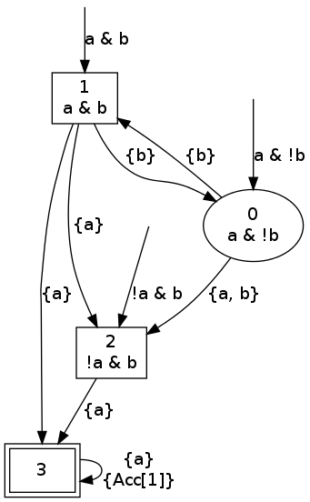
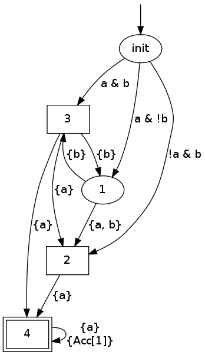
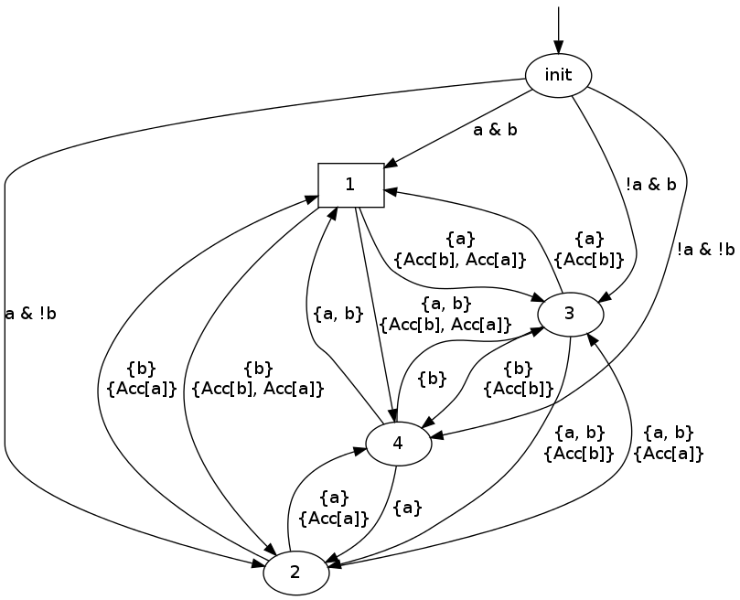
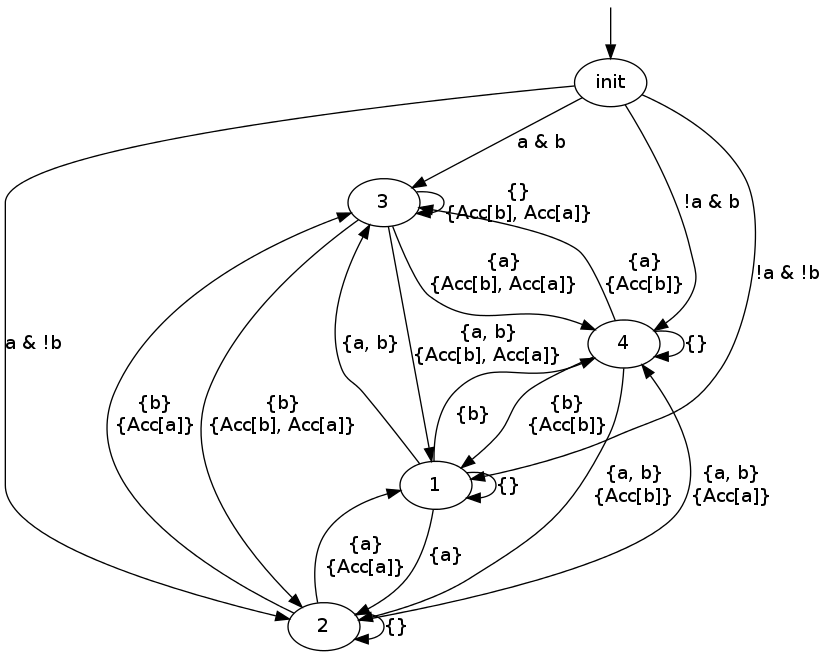

ltl2tgta
This tool generates various form of Testing Automata, i.e., automata that observe the changes of atomic propositions, not their values.
Three types of automata can be output. The only output format
supported currently is GraphViz's format, with option -8 to enable
UTF-8 characters as in other tools.
The --ta option will translate a formula into Testing Automaton, as
described by Geldenhuys and Hansen (Spin'06).
Here is the output on a U Gb (we omit the call to dot, as shown while
discussing ltl2tgba).
ltl2tgta --ta --multiple-init 'a U Gb'

As always, the labels of the states have no influence on the language
recognized by the automaton. This automaton has three possible
initial states. The initial state should be chosen depending on the
initial valuation of a and b in the system to be synchronized with
this testing automaton. For instance if a is true and b false in
the initial state, the testing automaton should start in the state
pointed to by the initial arrow labeled a & !b. In the rest of the
testing automaton, the transitions are labeled by the sets of atomic
propositions that should change in the system for the testing
automaton to progress. States with a double enclosure are Büchi
accepting, meaning that any execution that visits one of these states
is accepting. All states have an implicit self-loop labeled by {}:
if the system progress without changing the value of a and b, the
testing automaton remains in the same state. Rectangle states are
livelock-accepting: any execution of the system that get stuck into
one of these state is accepting.
Without the --multiple-init option, a fake initial state is added.
This is the default since it often makes the result more readable.
ltl2tgta --ta 'a U Gb'

The --gba option can be used to request a Generalized Testing
Automaton, i.e., a Testing Automaton with Generalized Büchi
acceptance. In that case double-enclosures are not used anymore, and
Büchi accepting transitions are marked with the same {Acc[x],Acc[y]}
notation used in TGBA.
ltl2tgta --gta 'GFa & GFb'

The interpretation is similar to that of the TA. Execution that
stutter in a livelock-accepting (square) state are accepting as well
as execution that visit the Acc[a] and Acc[b] acceptance sets
infinitely often. Those acceptance sets are carried by transitions,
as in TGBAs.
Finally, the default is to output a Transition-based Generalized
Testing Automaton 1. In TGTAs, the stuttering states are
made explicit with {} self-loops. Since these self-loop can be in
acceptance sets, livelock acceptance states are no longer needed.
ltl2tgta 'GFa & GFb'

Footnotes:
1 : This new class of automaton, as well as the implementation of the previous testing automata classes, is part of Ala Eddine BEN SALEM's PhD work, and should appear in a future edition of ToPNoC (LNCS 7400).